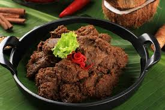
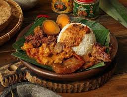

Nasi Liwet
Nasi gurih khas Solo dan Sunda yang dimasak dengan santan, disajikan dengan ayam suwir, tahu, dan sambal.

Rendang
Masakan daging khas Minangkabau yang dimasak dengan rempah-rempah kaya rasa dan santan hingga kering.
Pempek
Kudapan khas Palembang berbahan dasar ikan dan sagu, disajikan dengan kuah cuko yang khas dan asam pedas.

Gudeg
Makanan khas Yogyakarta yang terbuat dari nangka muda dimasak dengan santan dan gula merah.
Sate
Daging yang dibakar dengan tusuk sate, disajikan dengan bumbu kacang atau kecap. Tersedia banyak variasi di seluruh Indonesia.